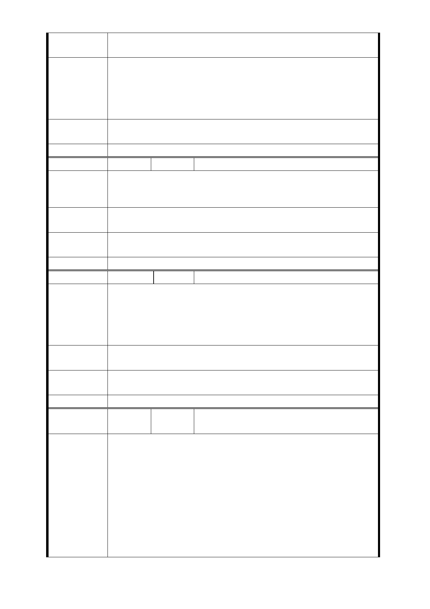

輕的房子。
3. 拆除後戶口須遷出，小孩就學問題。
1. 只設立出入口，且使用公有地，可考慮移至萬華國中或雙
園國小的人行道。
建 議 辦 法 （1） 本住戶不參加聯合開發。
（2） 本住戶不賣給市政府。
（3） 本住戶之土地不要被強制徵收。
市府回應
意見
同編號捷五－1 回應意見。
委員會決議 同編號交一－1 委員會決議。
編 號 捷五-52 陳情人 吳○旻
對於「自住」為目的住戶而言，所擔心的是參與都更後分配
陳 情 理 由 的坪數不夠一家人居住，甚至是三代同堂的家庭。因此希望
委員會能多方思考擇優選擇方案。
建議辦法
開發用地其都市計畫使用區應以最高最優惠的條件來計算獎
勵措施。以減少開發案所產生的阻力。
市府回應
意見
同編號捷五－3、捷五－4 回應意見。
委員會決議 同編號交一－1 委員會決議。
編 號 捷五-53 陳情人 蕭○只
在前屋主及仲介君未告知禁建情況下，於 100 年 7 月買下萬
大路 85 巷 14 弄 2 號 5 樓，同時斥資 300 多萬裝潢，原定 12
陳 情 理 由 月搬遷，花光積蓄併背負一千多萬房貸，如今捷運局官員告
知只能住 2 年，讓我情何以堪，該向誰求償，堅決反對徵收
和開發。
建議辦法
1. 縮小出入口範圍。
2. 另覓他處設置出入口。
市府回應
意見
同編號捷五－1 回應意見。
委員會決議 同編號交一－1 委員會決議。
編
號 捷五-54
陳情人
捷運萬大線 LG03 站捷五開發用地住戶自
救會 74 人聯合陳情(會長：宋○彬)
一、行政程序有重大瑕疵：
捷運萬大線 LG 03 站捷五開發用地住戶土地所有權人，在今
年中華民國一百年十一月二十九日、十二月七日兩次說明會
前，從未參與、從未被徵詢、從未得到任何政府官員通知我
陳情理由
們的家園要劃為捷運萬大線 LG 03 站捷五開發用地，甚至部
分住戶還是這兩次說明會後經由其他住戶通知才得知此事，
然而從民國九十九年核定到一百年十一月，期間從未收到政
府通知隻字片語，就直接把我們的家園徵收為捷運用地？
二、西藏路北側捷五開發用地，無都市更新必要：
捷運萬大線 LG 03 站捷五開發用地，半數為屋齡二十年左右
- 88 -